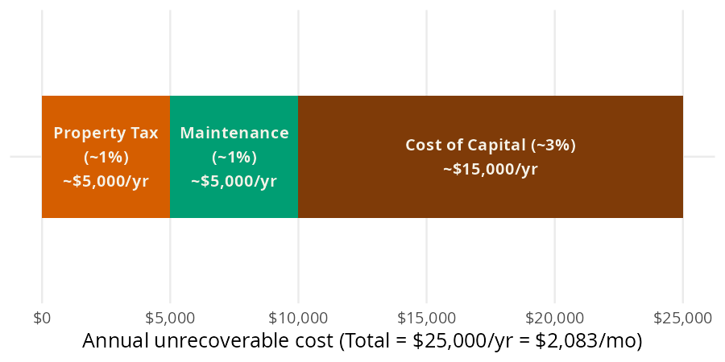
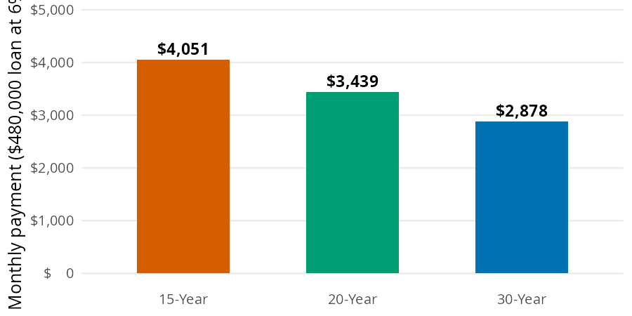
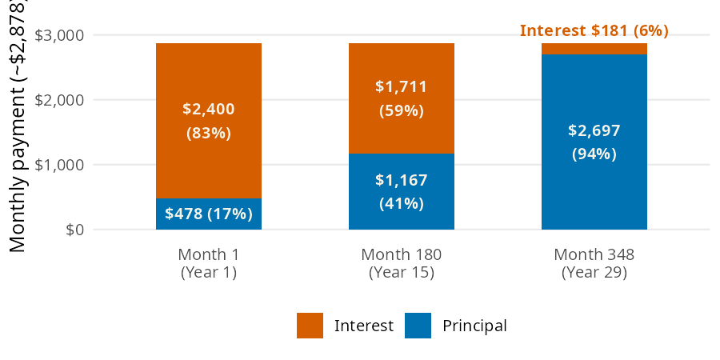

threshold = rent_buy_threshold(home_value=500000)
threshold2083.3333333333335A home is the biggest purchase most people ever make, and small percentages turn into tens of thousands of dollars. The Major Purchases chapter of the book asks three questions: when does renting beat buying, what will the mortgage cost each month, and where does the first payment go? In this page I’ll answer them with rent_buy_threshold(), mortgage_payment(), and first_payment_split(), using the chapter’s numbers so you can check each result against the book.
rent_buy_threshold() and mortgage_payment() accept arrays. first_payment_split() takes single numbers and returns a dict.
| Function | Returns | Units |
|---|---|---|
| rent_buy_threshold() | the monthly rent that matches the unrecoverable cost of owning | dollars per month (unrecoverable_rate is a decimal, default 0.05) |
| mortgage_payment() | the monthly payment on a fixed rate loan | dollars per month, principal and interest only |
| first_payment_split() | the interest and principal in the first payment | a dict of dollars, plus pct_interest as a percent |
Owning a home costs money you never get back, whether or not you have a mortgage. The 5% rule from the chapter adds up three of those costs for a $500,000 home: about 1% a year for property tax, 1% for maintenance, and 3% for the cost of capital (the return your money could have earned somewhere else).

rent_buy_threshold() takes 5% of the home’s value and divides by 12:
Owning this home costs about $2,083 a month that you never get back. If you can rent a similar place for less than that, renting and investing the difference tends to win.
The chapter’s loan is $480,000: a $600,000 home with 20% down, at 6%. The same loan gives very different payments depending on how many months you spread it over:

mortgage_payment() spreads the principal plus all future interest into equal monthly payments, with the rate as a decimal:
The 30 year loan costs about $2,877.84 a month. That covers principal and interest only; property tax and insurance come on top.
Early mortgage payments are mostly interest. In month one the interest is the full balance times the monthly rate, and only what’s left of the payment reduces the principal:

first_payment_split() returns the payment, its interest and principal parts, and the interest share as a percent:
{'payment': 2877.842520733233,
'interest': 2400.0,
'principal': 477.84252073323296,
'pct_interest': 83.39580719616703}Of the first $2,878 payment, $2,400 is interest (83%) and only $478 reduces the loan. That’s why moving after a few years leaves you with very little principal paid down.
first_payment_split() doesn’t repeat the payment formula. It calls mortgage_payment(), which uses the internal _annuity_factor() helper (the same one behind monthly_for_goal()):
first_payment_split()
└── mortgage_payment()
└── _annuity_factor()Passing several terms to years reproduces the three bars in the mortgage bar model. Multiplying each payment by the number of payments shows the total interest over the life of the loan:
years = [15, 20, 30]
payments = mortgage_payment(principal=480000, annual_rate=0.06, years=years)
pl.DataFrame({
"years": years,
"payment": payments,
"total_interest": payments * [y * 12 for y in years] - 480000,
})| years | payment | total_interest |
|---|---|---|
| i64 | f64 | f64 |
| 15 | 4050.512775 | 249092.299434 |
| 20 | 3438.869081 | 345328.579367 |
| 30 | 2877.842521 | 556023.307464 |
The 30 year loan has the lowest payment and more than twice the interest of the 15 year loan. The same approach compares rent thresholds across home prices:
home_values = [300000, 500000, 700000]
pl.DataFrame({
"home_value": home_values,
"threshold": rent_buy_threshold(home_value=home_values),
})| home_value | threshold |
|---|---|
| i64 | f64 |
| 300000 | 1250.0 |
| 500000 | 2083.333333 |
| 700000 | 2916.666667 |
rent_buy_threshold() is a rule of thumb. The 5% default is an average; set unrecoverable_rate if your property tax or maintenance is higher or lower. It ignores home price growth, the costs of buying and selling, and how long you stay.
mortgage_payment() assumes a fixed rate and returns principal and interest only, with no property tax, insurance, or PMI. A 0% rate returns principal / (years * 12), and years must be greater than 0.
first_payment_split() takes single numbers only. An array raises an error:
--------------------------------------------------------------------------- ValueError Traceback (most recent call last) Cell In[7], line 1 ----> 1 first_payment_split(principal=480000, annual_rate=0.06, years=[15, 30]) File ~/projects/pkgs/Python/perfinpy/src/perfinpy/major_purchases.py:147, in first_payment_split(principal, annual_rate, years) 145 principal = _as_scalar(principal, "principal") 146 annual_rate = _as_scalar(annual_rate, "annual_rate") --> 147 years = _as_scalar(years, "years") 148 payment = float(mortgage_payment(principal, annual_rate, years)) 149 interest = principal * (annual_rate / 12) File ~/projects/pkgs/Python/perfinpy/src/perfinpy/_checks.py:46, in _as_scalar(x, arg) 44 out = _as_numeric(x, arg) 45 if not isinstance(out, float): ---> 46 raise ValueError(f"`{arg}` must be a single number.") 47 return out ValueError: `years` must be a single number.
The chapter’s loan comes from a $600,000 home with 20% down. That’s a $120,000 down payment, the kind of goal the Financial Goals page plans for. Here is the whole decision in one cell: the monthly saving for the down payment over 10 years at 4%, the rent threshold for the home, and the mortgage payment once you buy:
home = 600000
save_monthly = monthly_for_goal(goal=home * 0.20, annual_rate=0.04, months=120)
rent_line = rent_buy_threshold(home_value=home)
mortgage = mortgage_payment(principal=home * 0.80, annual_rate=0.06, years=30)
round(save_monthly, 2), round(rent_line, 2), round(mortgage, 2)(814.94, 2500.0, 2877.84)Saving the down payment takes about $815 a month for 10 years. Once you buy, the mortgage is $2,878 a month, and the 5% rule says owning costs about $2,500 a month that you never get back. If a comparable rental costs less than $2,500, renting and investing the down payment is worth a serious look.
The 5% rule gives a quick rent or buy test, and rent_buy_threshold() turns it into a monthly number. mortgage_payment() shows how the term changes the payment, and first_payment_split() shows how little of an early payment goes to principal. Run these numbers before you fall in love with a floor plan.